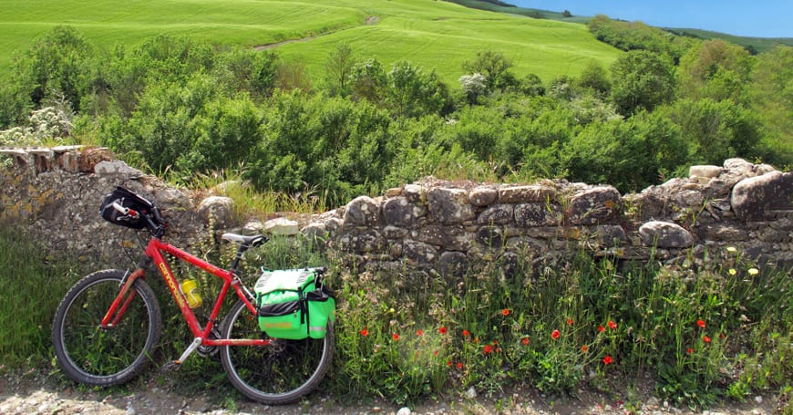
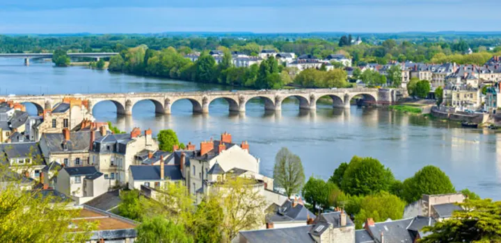
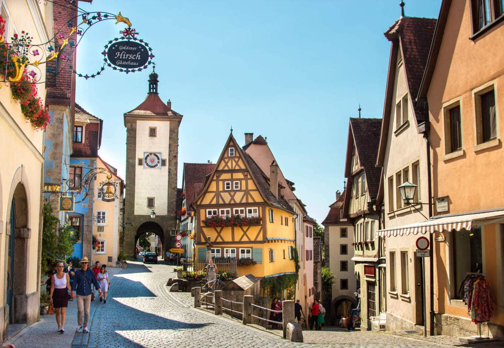
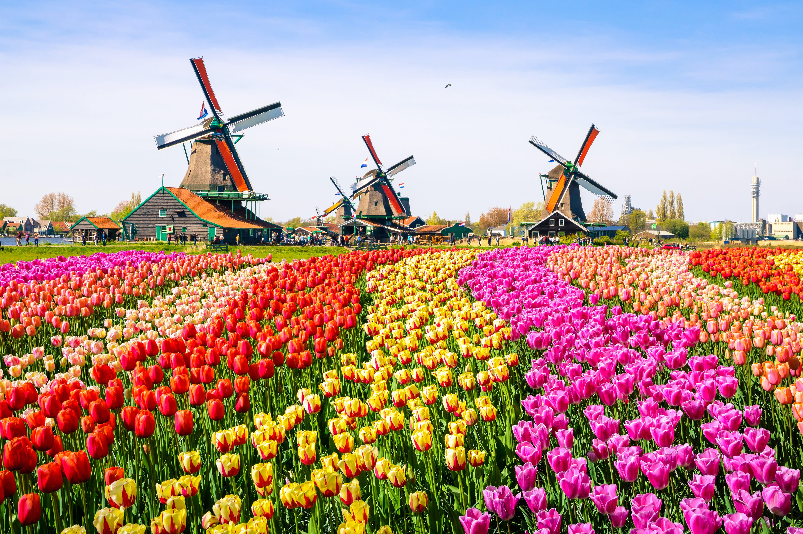
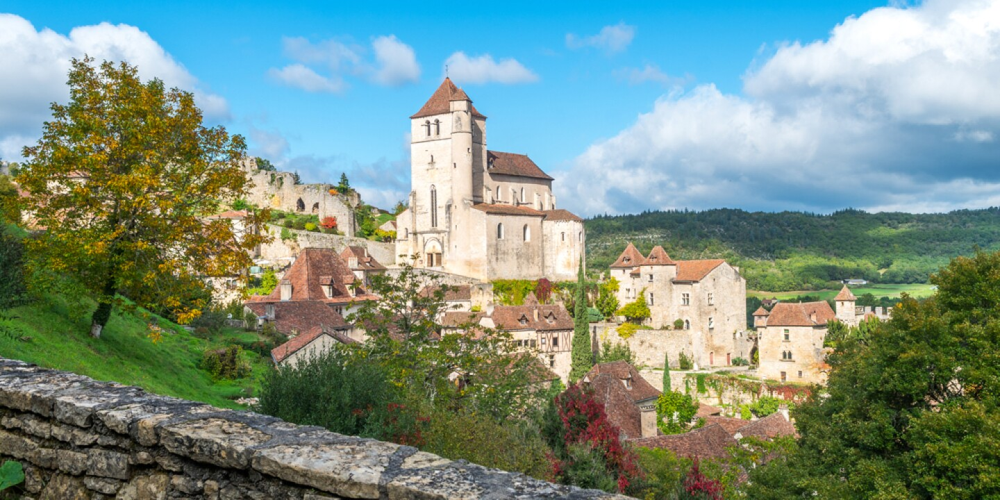

Much less well-known than other pilgrimages, like the Camino de Santiago, this route is still taken by more than 1,000 people each year. Cycling it over 20 days is perfectly feasible but be aware it involves crossing the Alps (the 2,469-metre Saint Bernard Pass) and the Apennines (the Passo della Cisa at 1,041 metres). Pilgrim accommodation (€10 a night on average) is sparse in France but much more common in Italy.

Cycling the River Loire, France
We did the first section of the EuroVelo 6 route from Orleans to Nantes. We took our bikes over on the car and parked in Nantes using the ZenPark app. We then took a train to Orleans and started our ride back to Nantes.
The route is well-signposted and uses a mix of dedicated cycle paths and minor roads. It works its way along the river and the scenery is stunning. The route is flat but there are worthwhile diversions inland to visit chateaux. There is plenty of good accommodation along the route. Nantes is a great place to finish as it has Les Machines de L’Île and the amazing giant mechanical elephant.

Romantic Road, southern Germany
This is a wonderful 440km cycle ride through peaceful countryside and the beautiful walled medieval towns of Nördlingen and Rothenburg ob der Tauber. The route also passes through the larger town of Augsburg. Towards the end of the ride, with the Alps in the distance, there is the amazing scene of Neuschwanstein castle in its mountain.
The Europabus coach service offers transport for cyclists and their bikes (reservations advisable), as well as offering short packages for cycling tours. It is, however, easy to organise yourself, as most German train stations have bike hire places, and it is easy to get to the start and from the finish by train.

Beautiful traffic-free ride to Berlin
Get the ferry to the Hook of Holland or Rotterdam and pick up the Eurovelo 2 cycle trail, also called the Capitals Route. It takes you across the Netherlands and Germany to Berlin. The route is so well-signposted that you rarely have to look at the map and it feels a bit like a treasure hunt looking out for the next signpost. You are taken along small, well-paved paths through forests and rambling countryside, with delicious food and beer and friendly people along the way.

Through French countryside to Paris
The early miles of the route meander through little French villages, over rolling downs and past fields of wheat and corn. The roads are quiet, and there are just enough hills to keep it interesting but not exhausting.
As you near Paris, unlike the Avenue Verte, this route takes you through a series of royal hunting forests to avoid the traffic. After 120 miles of villages, fields, and hunting forests, you enter Parc St Cloud. It’s an area of woodland just after Versailles, traffic-free, long and straight, and bordered by tall trees. Then, you see that the road opens out to a paved area, fountains, and something beyond.
